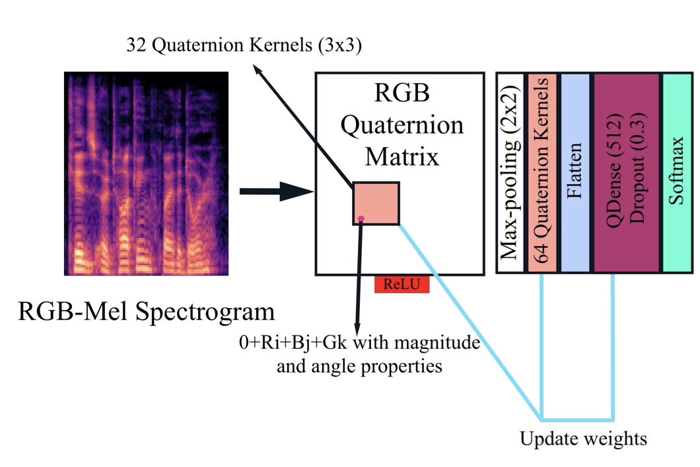
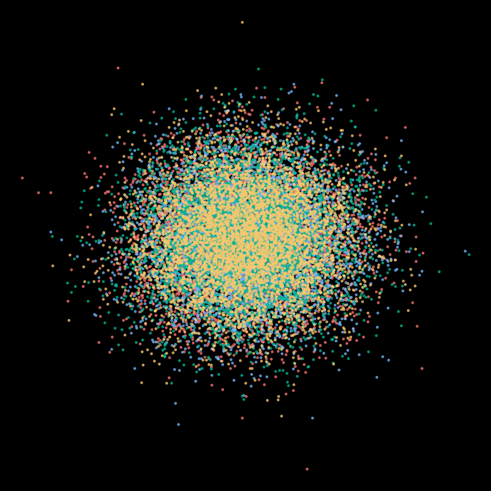
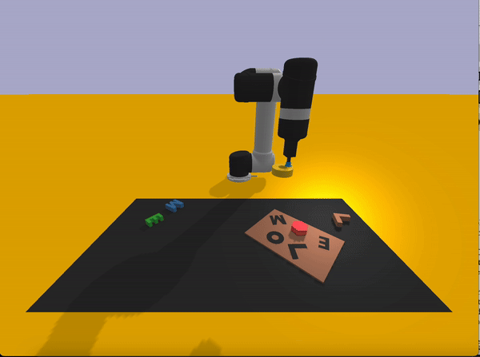
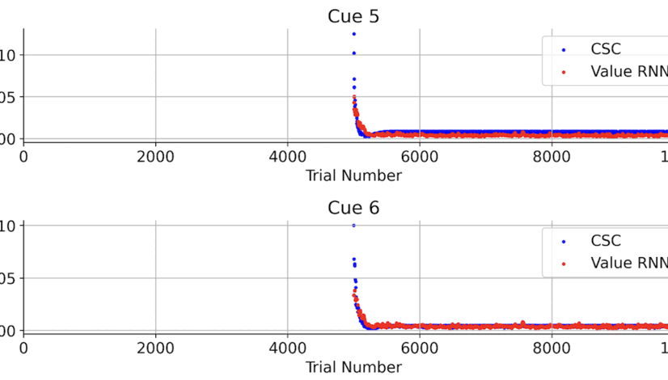
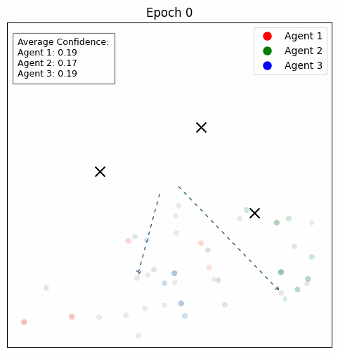

Aneesh Muppidi
I am an undergrad at Harvard, majoring in Computer Science and Neuroscience and concurrently pursuing a Master’s in Computer Science. At Harvard's Kempner Institute for the Study of Natural and Artificial Intelligence, I am a KURE Undergrad Research Fellow and advised by Prof. Samuel Gershman. At the Harvard Computational Robotics Lab, I am advised by Prof. Heng Yang. I've also completed research internships at MIT BCS with Ila Fiete and Microsoft Healthcare R&D. I've also contributed to AI Policy at The White House OSTP.
My research question is simple: how can agents plan for the unknown? I aim to explore this through the lenses of optimization, reinforcement learning, and generative world models.
[Email] / [Google Scholar] / [Github] / [Follow on X] / [LinkedIn]
Recent News
Preprints and Publications
 |
Permutation Invariant Learning with High-Dimensional Particle Filters arxiv RL optimization 🔺equal contribution. |
| |
Fast TRAC: A Parameter-free Optimizer for Lifelong Reinforcement Learning Aneesh Muppidi, Zhiyu Zhang, Heng Yang NeurIPS 2024 RL optimization vision-based arXiv, Bibtex, Code, Website |
 |
Resampling-free Particle Filters in High-dimensions Akhilan Boopathy, Aneesh Muppidi, Peggy Yang, Abhiram Iyer, William Yue, Ila Fiete ICRA 2024 optimization robotics vision-based arXiv, Bibtex |
|  |
Speech Emotion Recognition using Quaternion Convolutional Neural Networks Aneesh Muppidi, Martin Radfar ICASSP 2021 vision-based arXiv, Bibtex |
{kind=link}
Robotics/RL Classes and Projects
|  |
Final Project: Let's Learn Agency: Learning Emergent Agent and Non-Agent Trajectory Representations MIT 6.8200 with Pulkit Agrawal mixed RL Project Report, Video Presentation |
|  |
Final Project: Generating Suboptimal Expert Demonstrartions with Large Language Models MIT 6.4212 with Russ Tedrake; project advised by Lirui Wang positive robotics Project Report, Video Presentation |
|  |
Final Project: Rapid Learning Mechanisms and Neural Representations in Reinforcement Learning Harvard PSY 2350R with Sam Gershman; project advised by Jay Henning mixed RL Project Report, Code, Research Notebok |
| |
Final Project: Diffusion Policy for Classical Control Problems Harvard ES158 with Heng Yang negative RL robotics vision-based Project Report, Code, Slides |
|  |
Final Project: Visualizing Collaborative Multi-Agent Reinforcement Learning Harvard CS271 with Johanna Beyer and Hanspeter Pfister positive RL Project Report, Slides |